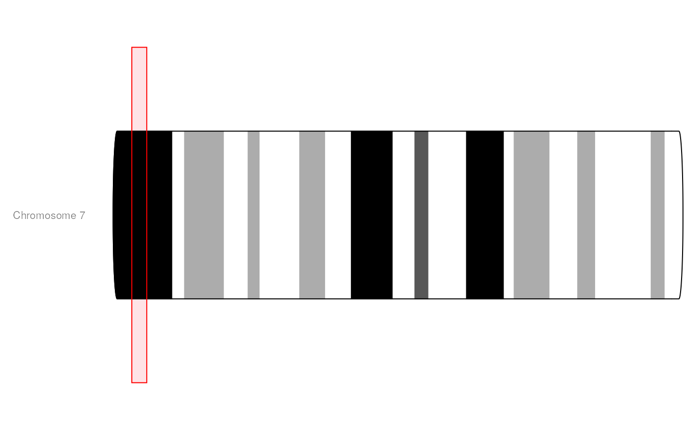
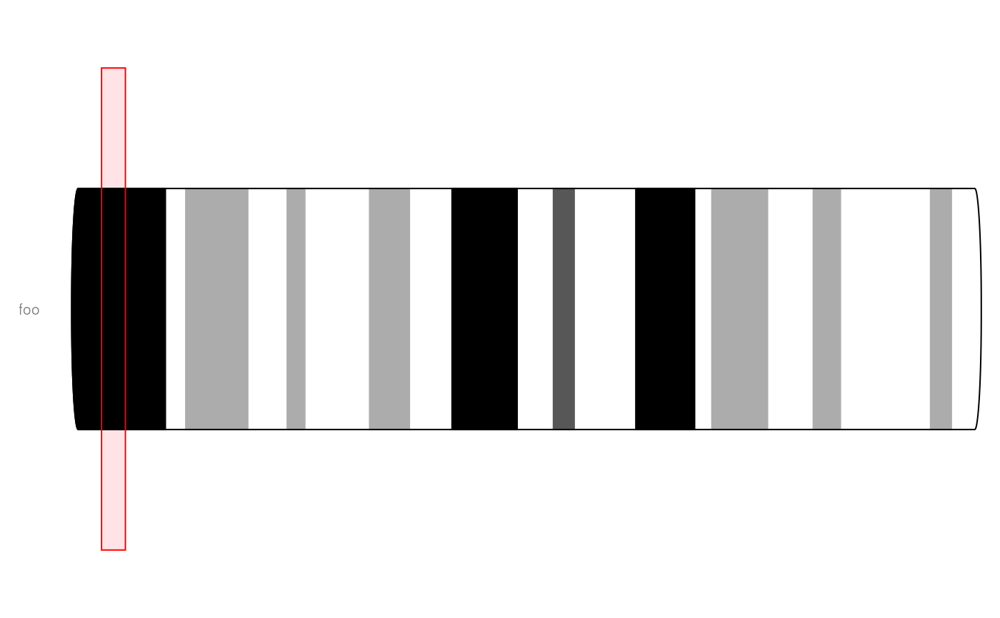

IdeogramTrack-class.RdA class to represent the schematic display of a chromosome, also known as an ideogram. The respective information is typically directly fetched from UCSC.
IdeogramTrack(chromosome=NULL, genome, name=NULL, bands=NULL, ...)
| chromosome | The chromosome for which to create the ideogram. Has
to be a valid UCSC chromosome identifier of the form |
|---|---|
| genome | The genome on which to create the ideogram. This has to be a valid UCSC genome identifier if the ideogram data is to be fetched from the UCSC repository. |
| name | Character scalar of the track's name used in the title panel when plotting. Defaults to the selected chromosome. |
| bands | A |
| ... | Additional items which will all be interpreted as further display parameters. |
Objects can be created using the constructor function IdeogramTrack.
The return value of the constructor function is a new object of class
IdeogramTrack.
range:Object of class GRanges,
inherited from class StackedTrack containing
the chromosome band information. This slot is filled automatically
by the initializer method.
bandTable:Object of
classdata.frame containing the chromosome band
information in the format of UCSC. This slot is filled automatically
by the initializer.
bandTable:Object of class
data.frame containing the chromosome band
information for all chromosomes. This slot is filled automatically
by the initializer method and only exists to prevent having to
redo the rtracklayer query ervery time the chromosome is changed.
chromosome:Object of class "character",
inherited from class StackedTrack defining
the ideogram's chromosome.
genome:Object of class "character" inherited
from class StackedTrack defining the
ideogram's genome.
dp:Object of class
DisplayPars, inherited from class
GdObject
name:Object of class "character", inherited
from class GdObject
imageMap:Class "RangeTrack", directly.
Class "GdObject", by class "RangeTrack", distance
2.
In the following code chunks, obj is considered to be an object of class IdeogramTrack.
Exported in the name space:
signature(x/GdObject="IdeogramTrack"):
although IdeogramTracks inherit from RangeTrack,
the notion of coordinates is not particularly useful. Hence the
coordinate methods all return NULL. Usage: start(x) end(x) width(x) position(GdObject) Examples:
width(obj)
signature(x="RangeTrack"):
although IdeogramTracks inherit from RangeTrack, the
notion of coordinates is not particularly useful. Hence the
coordinate replacement methods all return the unaltered input
object. Usage: start<-(x, value) end<-(x, value) width<-(x, value) Additional Arguments:
value: replacement value.
start(obj) <- 1:10
end(obj) <- 20:30
width(obj) <- 1
signature(GdObject="IdeogramTrack"):
replace the value of the track's chromosome. This has to be a
valid UCSC chromosome identifier or an integer or character
scalar that can be reasonably coerced into one. The chromosome
band information is updated automatically. Usage: chromosome<-(GdObject, value) Additional Arguments:
value: replacement value.
chromosome(obj) <- "chr12"
signature(x="IdeogramTrack"): set the track's
genome. This has to be a valid UCSC identifier. The chromosome
band information is updated automatically. Usage: genome<-(x, value) Additional Arguments:
value: replacement value.
genome(obj) <- "mm9"
signature(x="IdeogramTrack"): subsetting does
not make much sense for these object, hence the unalered object is
returned. Usage: subset(x, ...) Additional Arguments:
...: all further arguments are ignored.
signature(x="IdeogramTrack", i="ANY", j="ANY",
drop="ANY"): subsetting of IdeogramTrack objects does
not make much sense, hence the unaltered input argument is
returned. Additional Arguments:
i, j: subsetting indices, j is
ignored.
drop: argument is ignored.
obj[1:5]
Internal methods:
signature(gdObject="IdeogramTrack"): plot the
object to a graphics device. The return value of this method is
the input object, potentially updated during the plotting
operation. Internally, there are two modes in which the method can
be called. Either in 'prepare' mode, in which case no plotting is
done but the object is preprocessed based on the
available space, or in 'plotting' mode, in which case the actual
graphical output is created. Since subsetting of the object can be
potentially costly, this can be switched off in case subsetting
has already been performed before or is not necessary. Usage: drawGD(GdObject, minBase, maxBase, prepare=FALSE,
subset=TRUE, ...) Additional Arguments:
minBase, maxBase: the coordinate range to
plot.
prepare: run method in preparation or in
production mode.
subset: subset the object to the visible region
or skip the potentially expensive subsetting operation.
...: all further arguments are ignored.
Gviz:::drawGD(obj)
Gviz:::drawGD(obj, minBase=1, maxBase=100)
Gviz:::drawGD(obj, prepare=TRUE,
subset=FALSE)
signature(.Object="IdeogramTrack"):
initialize the object.
signature(object="IdeogramTrack"): show a
human-readable summary of the object.
Inherited methods:
signature(GdObject="IdeogramTrack"):
return the chromosome for which the track is defined. Usage: chromosome(GdObject) Examples:
signature(GdObject="IdeogramTrack"): return the
grouping information for track items. For certain sub-classes,
groups may be indicated by different color schemes when
plotting. See grouping or
AnnotationTrack and
GeneRegionTrack for details. Usage: feature(GdObject) Examples:
signature(gdObject="IdeogramTrack",
value="character"): set the grouping information for track
items. This has to be a factor vector (or another type of vector
that can be coerced into one) of the same length as the number of
items in the IdeogramTrack. See grouping or
AnnotationTrack and
GeneRegionTrack for details. Usage: feature<-(GdObject, value) Additional Arguments:
value: replacement value.
feature(obj) <- c("a", "a", "b", "c", "a")
signature(x="IdeogramTrack"): return the track's genome. Usage: genome(x) Examples:
genome(obj)
signature(x="IdeogramTrack"): return the number
of items in the track. Usage: length(x) Examples:
signature(x="IdeogramTrack"): return the genomic
coordinates for the track as an object of class
IRanges. Usage: range(x) Examples:
signature(x="IdeogramTrack"): return the genomic
coordinates for the track along with all additional annotation
information as an object of class GRanges. Usage: ranges(x) Examples:
ranges(obj)
signature(x="IdeogramTrack"): splitting is not a
useful operation for IdeogramTrack objects. Usage: split(x, f, ...) Additional Arguments:
f: the splitting factor.
...: all further arguments are ignored.
signature(x="IdeogramTrack"): strand
information is not relevant for IdeogramTrack objects. Usage: strand(x) Examples:
strand(obj)
signature(x="IdeogramTrack"): strand
information is not relevant for IdeogramTrack objects. Usage: strand<-(x, value) Additional Arguments:
value: replacement value.
strand(obj) <- "+"
signature(x="IdeogramTrack"): return all
additional annotation information except for the genomic coordinates
for the track items as a data.frame. Usage: values(x) Examples:
values(obj)
signature(from="IdeogramTrack", to="data.frame"):
coerce the GRanges object in the
range slot into a regular data.frame. Examples:
as(obj, "data.frame")
signature(x="IdeogramTrack",
name="character"): list the value of the display parameter
name. See settings for details on display
parameters and customization. Usage: displayPars(x, name) Examples:
signature(x="IdeogramTrack", name="missing"):
list the value of all available display parameters. See
settings for details on display parameters and
customization. Examples:
signature(x="IdeogramTrack", name="character"):
alias for the displayPars method. See
settings for details on display parameters and
customization. Usage: getPar(x, name) Examples:
signature(x="IdeogramTrack", name="missing"):
alias for the displayPars method. See
settings for details on display parameters and
customization. Examples:
signature(x="IdeogramTrack", value="list"):
set display parameters using the values of the named list in
value. See settings for details on display
parameters and customization. Usage: displayPars<-(x, value) Examples:
displayPars(obj) <- list(col="red", lwd=2)
signature(x="IdeogramTrack", value="character"):
set the single display parameter name to value. Note
that display parameters in the IdeogramTrack class are
pass-by-reference, so no re-assignmnet to the symbol obj is
necessary. See settings for details on display
parameters and customization. Usage: setPar(x, name, value) Additional Arguments:
name: the name of the display parameter to set.
signature(x="IdeogramTrack", value="list"): set
display parameters by the values of the named list in
value. Note that display parameters in the
IdeogramTrack class are pass-by-reference, so no re-assignmnet
to the symbol obj is necessary. See settings
for details on display parameters and customization. Examples:
signature(GdObject="IdeogramTrack"): return
grouping information for the individual items in the track. Unless
overwritten in one of the sub-classes, this usualy returns
NULL. Usage: group(GdObject) Examples:
signature(x="IdeogramTrack"): return the value of
the name slot. Usage: names(x) Examples:
signature(x="IdeogramTrack", value="character"):
set the value of the name slot. Usage: names<-(x, value) Examples:
names(obj) <- "foo"
signature(ImageMap="IdeogramTrack"): return the
coordinates from the internal image map. Usage: coords(ImageMap) Examples:
signature(x="IdeogramTrack"): return the tags from the
internal image map. Usage: tags(x) Examples:
signature(GdObject="IdeogramTrack"): add a
y-axis to the title panel of a track if necessary. For
IdeogramTrack objects this does not plot anything and
returns NULL. Usage: drawAxis(x, ...) Additional Arguments:
...: all further arguments are ignored.
Gviz:::drawAxis(obj)
signature(GdObject="IdeogramTrack"):
superpose a grid on top of a track if necessary. For
IdeogramTrack objects this does not plot anything and
returns NULL. Usage: drawGrid(GdObject, ...) Additional Arguments:
...: additional arguments are ignored.
Gviz:::drawGrid(obj)
Ideograms are schematic depictions of chromosomes, including
chromosome band information and centromere location. The relevant data
for various species is stored in the UCSC data base. The initializer
method of the class will automatically fetch the respective data for a
given genome and chromosome from UCSC and fill the appropriate object
slots. When plotting IdeogramTracks, the current genomic
location is indicated on the chromosome by a colored box.
The Gviz.ucscUrl option controls which URL is being used to
connect to UCSC. For instance, one could switch to the European UCSC
mirror by calling
options(Gviz.ucscUrl="http://genome-euro.ucsc.edu/cgi-bin/".
The following display parameters are set for objects of class
IdeogramTrack upon instantiation, unless one or more of them
have already been set by one of the optional sub-class initializers,
which always get precedence over these global defaults. See
settings for details on setting graphical parameters
for tracks.
background.title="transparent": Character scalar.
The background color for the title panel. Defaults to omit the
background.
bevel=0.45: Numeric scalar, between 0 and 1. The
level of smoothness for the two ends of the ideogram.
centromereShape="triangle": Character scalar. The
shape of the centromere. Only "triangle" or "circle" is accepted.
Default to "triangle"
cex=0.8: Numeric scalar. The overall font expansion
factor for the chromosome name text.
cex.bands=0.7: Numeric scalar. The font expansion
factor for the chromosome band identifier text.
col="red": Character scalar. The border color used
for the highlighting of the currently displayed genomic region.
col.border.title="transparent": Integer or character
scalar. The border color for the title panels.
fill="#FFE3E6": Character scalar. The fill color
used for the highlighting of the currently displayed genomic
region.
fontcolor="#808080": Character scalar. The font
color for the chromosome name text.
fontface=1: Character scalar. The font face for the
chromosome name text.
fontfamily="sans": Character scalar. The font family
for the chromosome name text.
fontsize=10: Numeric scalar. The font size for the
chromosome name text.
lty=1: Character or integer scalar. The line type
used for the highlighting of the currently displayed genomic
region.
lwd=1: Numeric scalar. The line width used for the
highlighting of the currently displayed genomic region.
lwd.border.title=1: Integer scalar. The border width
for the title panels.
outline=FALSE: Logical scalar. Add borders to the
individual chromosome staining bands.
showBandId=FALSE: Logical scalar. Show the identifier
for the chromosome bands if there is space for it.
showId=TRUE: Logical scalar. Indicate the chromosome
name next to the ideogram.
showTitle=FALSE: Logical scalar. Plot a title panel.
Defaults to omit the title panel.
size=NULL: Numeric scalar. The relative size of the
track. Defaults to automatic size setting. Can also be overridden
in the plotTracks function.
Additional display parameters are being inherited from the respective
parent classes. Note that not all of them may have an effect on the
plotting of IdeogramTrack objects.
alpha=1: Numeric scalar. The transparency for
all track items.
alpha.title=NULL: Numeric scalar. The transparency
for the title panel.
background.legend="transparent": Integer or
character scalar. The background color for the legend.
background.panel="transparent": Integer or
character scalar. The background color of the content panel.
cex.axis=NULL: Numeric scalar. The expansion
factor for the axis annotation. Defaults to NULL, in
which case it is automatically determined based on the
available space.
cex.title=NULL: Numeric scalar. The expansion
factor for the title panel. This effects the fontsize of both
the title and the axis, if any. Defaults to NULL,
which means that the text size is automatically adjusted to
the available space.
col.axis="white": Integer or character scalar.
The font and line color for the y axis, if any.
col.frame="lightgray": Integer or character
scalar. The line color used for the panel frame, if
frame==TRUE
col.grid="#808080": Integer or character scalar.
Default line color for grid lines, both when type=="g"
in DataTracks and when display parameter
grid==TRUE.
col.line=NULL: Integer or character scalar.
Default colors for plot lines. Usually the same as the global
col parameter.
col.symbol=NULL: Integer or character scalar.
Default colors for plot symbols. Usually the same as the
global col parameter.
col.title="white" (Aliases: fontcolor.title):
Integer or character scalar. The border color for the title panels
collapse=TRUE: Boolean controlling whether to
collapse the content of the track to accomodate the minimum
current device resolution. See collapsing for
details.
fontface.title=2: Integer or character scalar.
The font face for the title panels.
fontfamily.title="sans": Integer or character
scalar. The font family for the title panels.
frame=FALSE: Boolean. Draw a frame around the
track when plotting.
grid=FALSE: Boolean, switching on/off the plotting
of a grid.
h=-1: Integer scalar. Parameter controlling the
number of horizontal grid lines, see panel.grid
for details.
lineheight=1: Numeric scalar. The font line
height for all text, unless a more specific definition exists.
lty.grid="solid": Integer or character scalar.
Default line type for grid lines, both when type=="g"
in DataTracks and when display parameter
grid==TRUE.
lwd.grid=1: Numeric scalar. Default line width
for grid lines, both when type=="g" in DataTracks
and when display parameter grid==TRUE.
lwd.title=1: Integer scalar. The border width
for the title panels
min.distance=1: Numeric scalar. The minimum
pixel distance before collapsing range items, only if
collapse==TRUE. See collapsing for details.
min.height=3: Numeric scalar. The minimum range
height in pixels to display. All ranges are expanded to this
size in order to avoid rendering issues. See collapsing
for details.
min.width=1: Numeric scalar. The minimum range
width in pixels to display. All ranges are expanded to this
size in order to avoid rendering issues. See collapsing
for details.
reverseStrand=FALSE: Logical scalar. Set up the
plotting coordinates in 3' -> 5' direction if TRUE.
This will effectively mirror the plot on the vertical axis.
rotation=0: The rotation angle for all text
unless a more specific definiton exists.
rotation.title=90 (Aliases: rotation.title):
The rotation angle for the text in the title panel. Even
though this can be adjusted, the automatic resizing of the
title panel will currently not work, so use at own risk.
showAxis=TRUE: Boolean controlling whether to
plot a y axis (only applies to track types where axes are
implemented).
v=-1: Integer scalar. Parameter controlling the
number of vertical grid lines, see panel.grid
for details.
Florian Hahne
data.frame
IRanges
When fetching ideogram data from UCSC the results are cached for
faster acces. See clearSessionCache on details to delete
these cached items.
# \dontshow{ ## Load some sample data data(idTrack) # } ## Construct the object if (FALSE) { idTrack <- IdeogramTrack(chromosome=7, genome="mm9") } # \dontshow{ ## For some annoying reason the postscript device does not know about ## the sans font if(!interactive()) { font <- ps.options()$family displayPars(idTrack) <- list(fontfamily=font, fontfamily.title=font) } # } ## Plotting plotTracks(idTrack, from=5000000, to=9000000)#> [1] "chr7"#> chr7 #> "chr7"#> [1] "mm9"#> IRanges object with 20 ranges and 0 metadata columns: #> start end width #> <integer> <integer> <integer> #> [1] 0 15943333 15943334 #> [2] 15943333 19131999 3188667 #> [3] 19131999 29760888 10628890 #> [4] 29760888 36138221 6377334 #> [5] 36138221 39326888 3188668 #> ... ... ... ... #> [16] 116917775 124357997 7440223 #> [17] 124357997 129140997 4783001 #> [18] 129140997 144021442 14880446 #> [19] 144021442 147741553 3720112 #> [20] 147741553 152524553 4783001ranges(idTrack)#> GRanges object with 20 ranges and 2 metadata columns: #> seqnames ranges strand | name type #> <Rle> <IRanges> <Rle> | <factor> <factor> #> [1] qA1 0-15943333 * | qA1 gpos100 #> [2] qA2 15943333-19131999 * | qA2 gneg #> [3] qA3 19131999-29760888 * | qA3 gpos33 #> [4] qB1 29760888-36138221 * | qB1 gneg #> [5] qB2 36138221-39326888 * | qB2 gpos33 #> ... ... ... ... . ... ... #> [16] qF1 116917775-124357997 * | qF1 gneg #> [17] qF2 124357997-129140997 * | qF2 gpos33 #> [18] qF3 129140997-144021442 * | qF3 gneg #> [19] qF4 144021442-147741553 * | qF4 gpos33 #> [20] qF5 147741553-152524553 * | qF5 gneg #> ------- #> seqinfo: 97 sequences from an unspecified genome; no seqlengths## Annotation values(idTrack)#> name type #> 1 qA1 gpos100 #> 2 qA2 gneg #> 3 qA3 gpos33 #> 4 qB1 gneg #> 5 qB2 gpos33 #> 6 qB3 gneg #> 7 qB4 gpos33 #> 8 qB5 gneg #> 9 qC gpos100 #> 10 qD1 gneg #> 11 qD2 gpos66 #> 12 qD3 gneg #> 13 qE1 gpos100 #> 14 qE2 gneg #> 15 qE3 gpos33 #> 16 qF1 gneg #> 17 qF2 gpos33 #> 18 qF3 gneg #> 19 qF4 gpos33 #> 20 qF5 gneg## coercion as(idTrack, "data.frame")#> X.seqnames X.start X.end X.width X.strand X.name X.type name type #> 1 qA1 0 15943333 15943334 * qA1 gpos100 qA1 gpos100 #> 2 qA2 15943333 19131999 3188667 * qA2 gneg qA2 gneg #> 3 qA3 19131999 29760888 10628890 * qA3 gpos33 qA3 gpos33 #> 4 qB1 29760888 36138221 6377334 * qB1 gneg qB1 gneg #> 5 qB2 36138221 39326888 3188668 * qB2 gpos33 qB2 gpos33 #> 6 qB3 39326888 49955776 10628889 * qB3 gneg qB3 gneg #> 7 qB4 49955776 56864554 6908779 * qB4 gpos33 qB4 gpos33 #> 8 qB5 56864554 63773332 6908779 * qB5 gneg qB5 gneg #> 9 qC 63773332 74933665 11160334 * qC gpos100 qC gpos100 #> 10 qD1 74933665 80779554 5845890 * qD1 gneg qD1 gneg #> 11 qD2 80779554 84499665 3720112 * qD2 gpos66 qD2 gpos66 #> 12 qD3 84499665 94597109 10097445 * qD3 gneg qD3 gneg #> 13 qE1 94597109 104694553 10097445 * qE1 gpos100 qE1 gpos100 #> 14 qE2 104694553 107351775 2657223 * qE2 gneg qE2 gneg #> 15 qE3 107351775 116917775 9566001 * qE3 gpos33 qE3 gpos33 #> 16 qF1 116917775 124357997 7440223 * qF1 gneg qF1 gneg #> 17 qF2 124357997 129140997 4783001 * qF2 gpos33 qF2 gpos33 #> 18 qF3 129140997 144021442 14880446 * qF3 gneg qF3 gneg #> 19 qF4 144021442 147741553 3720112 * qF4 gpos33 qF4 gpos33 #> 20 qF5 147741553 152524553 4783001 * qF5 gneg qF5 gneg